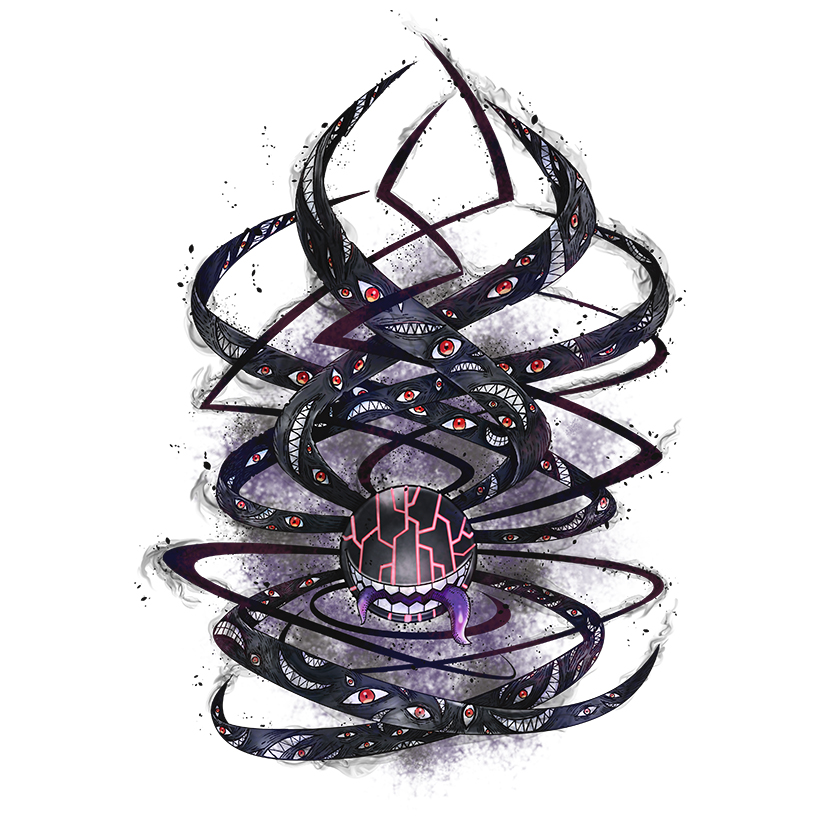

| Abbadomon | |||
|---|---|---|---|
|  | Level: Mega | Similar Digimons: | |
| Type: Unidentified | Abbadomon Core | ||
| Attribute: Unknown | Negamon | ||
| Attacks: |
|
||
| Bio | |||
| A mysterious Digimon that absorbed the negative data overflowing from the network beyond its limit to Digivolve into a gigantic form. Abbadomon exists to transcend good and evil, returning all to nothingness. Its central maw and the mouths on its numerous tentacles bite into Digimon and the very Digital World, leaving only blank, empty data in its wake. The birth of Abbadomon undoubtedly threatens everything in the Digital World, and it is thought to have annihilated several Digital Worlds in other dimensions. It uses its special move Gaze Eraser to fire cursed beams from the eyes on its tentacles, Gala-lightness to grab the enemy with its tentacles and swallow them whole with its central maw, or White Liner to fire a white beam from its mouth. Those struck by any of these moves are erased in an instant. |
|||